Case #01 | ［主催機関名］
［会の名称：課題と成果を一文で］
［当日起きたことと、どう戻したか。2〜3行］
- 会の規模
- 登壇［ ］人、会場［ ］人
- 当日の体制
- スタッフ［ ］名（映像1名、音声・配信1名）
- 使用機材
- カメラ［ ］台、マイク［ ］本
- 金額
- ［25万〜30万円］
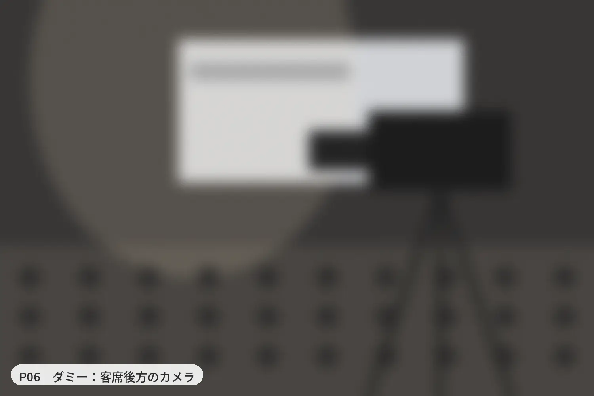
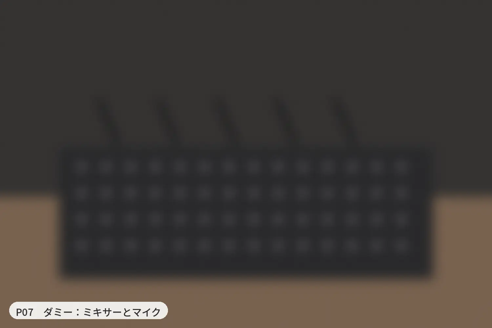
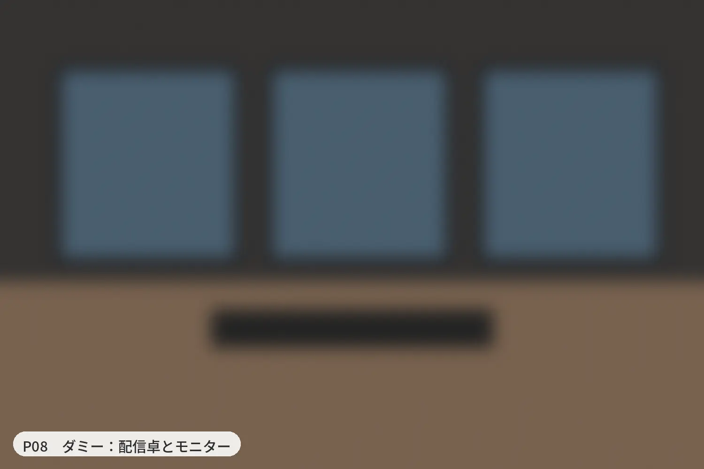

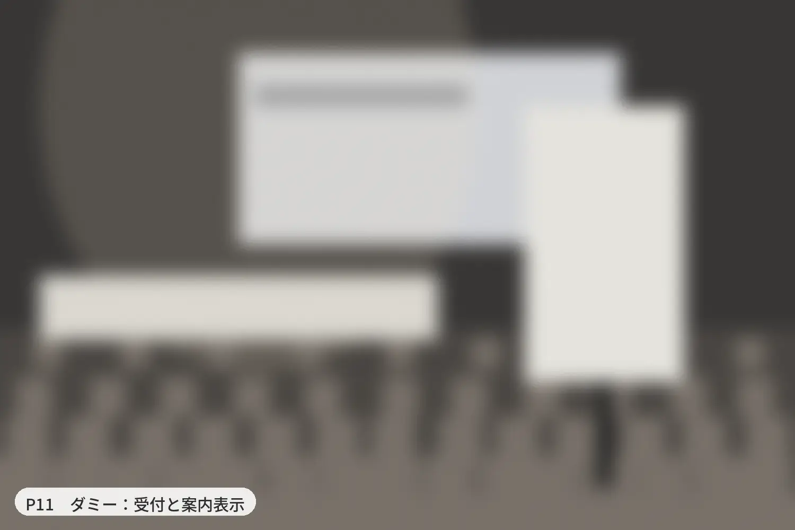
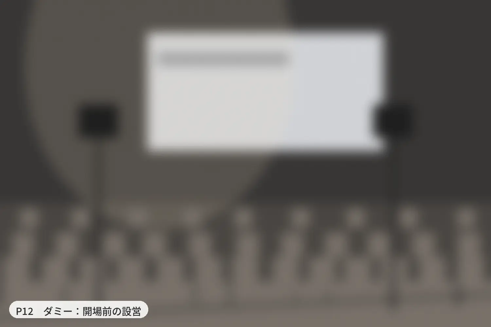
シンポジウム・講演会・公開講座のライブ配信／ハイブリッド配信（会場＋オンライン）
8問でプラン診断
1分ほどで終わります
カメラ3台・スタッフ2名・マイク5本。
25万円（税別）
配信画面の切り替え
3台あると、話す人が替わるたびに映像を切り替えられます。
写真は同じ会の3枚（ダミー：P01・P02・P03）
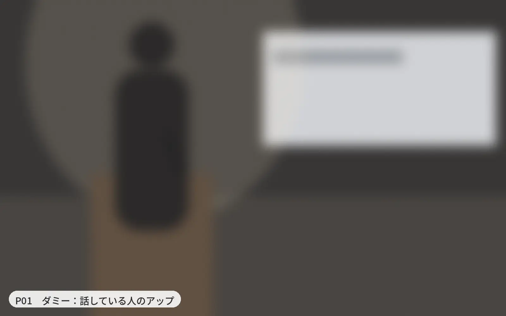
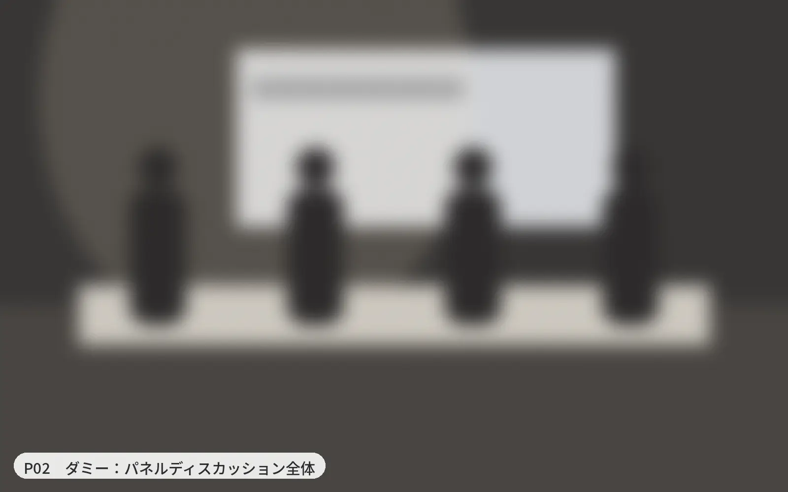
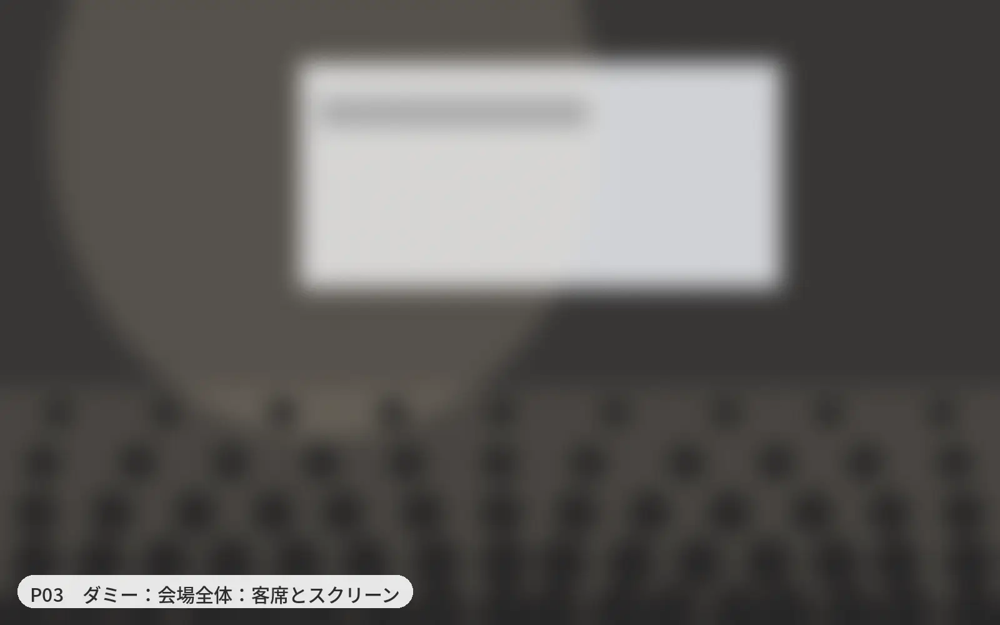
配信中の画面
お引き受けする会
25万円に含まれるもの
誰が来て、何を持ち込み、何をするか。
見積書にも同じ内容を記載します。
25万円（税別）
含まれるもの
当日の体制と機材
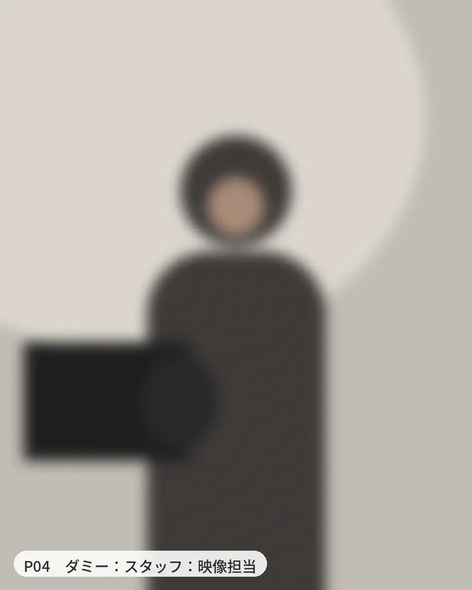
カメラ3台の操作と、配信画面の切り替え
［氏名・経歴一行］
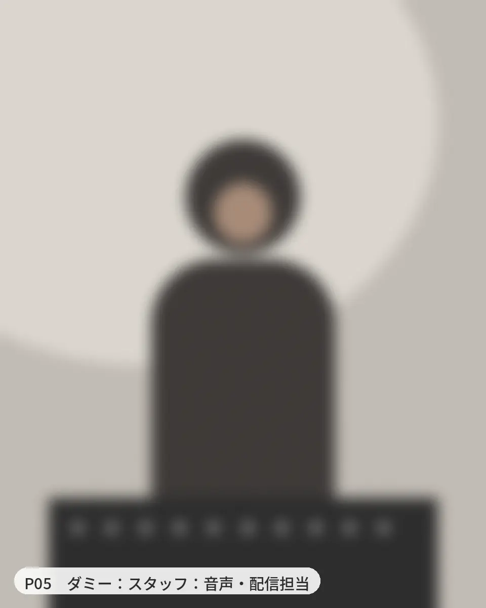
マイクと音量の調整、配信の監視、登壇者PCの接続
［氏名・経歴一行］
| 種類 | 機種 | 数 | 用途 |
|---|---|---|---|
| カメラ | ［機種名］ | 3台 | 話している人のアップ、登壇者全体、会場全体 |
| マイク | ［機種名］ | 5本 | 登壇者4人分と、会場の質問用1本 |
| 画面の切り替え機 | ［機種名］ | ［数］ | 発表スライドとカメラ映像の切り替え |
| 録画機 | ［機種名］ | 2系統 | 片方が止まっても、もう片方で記録を残します |
| 回線 | ［機種名・回線種別］ | 2系統 | 会場の回線が切れても、予備回線で配信を続けます |
| 条件 | 追加料金（税別） |
|---|---|
| 配信時間を1時間延長する | ［金額］ |
| スタッフを1名追加する（オンライン登壇者がいる場合、マイク6本以上の場合） | ［金額］ |
| カメラを1台追加する | ［金額］ |
| 会場に使えるインターネット回線がない | ［金額］ |
| 対応エリア（新宿から90分圏内）外の交通費・宿泊費 | 実費 |
この体制で、見積書を受け取る
日程と会場だけで、2名の役割と機材の内訳が入った見積書をお送りします。1営業日以内に、宛名入りのPDFでお届けします。
当日の流れ
登壇者を迎え、進行を見守り、来賓に挨拶する。
配信の実務はスタッフ2名にお任せください。
会場のマイク音声を配信機材に直接取り込みます。会場にマイクがなければ5本まで持ち込みます。音が悪いと、研究まで低く見られます（Newman & Schwarz 2018）。
客席の後ろから、話している人の表情を撮ります。来場者の視界をふさぎません。
発表スライド、登壇者、会場全体の映像を状況に合わせて切り替えます。スライドの隅に登壇者の顔を出すこともできます。
録画機もインターネット回線も2系統ずつ用意します。どれか1つが止まっても、配信と記録は続きます。
事前に「復旧手順書」を1枚お渡しします。何が止まったら、誰が、何分で、どう復旧するかを明記しています。
受付とチケット
申込の受付、当日の入場、終了後の報告まで。
来場者とオンライン視聴者が、1つの名簿にまとまります。
参加者のスマホに表示されたQRコードを、受付のスマホで読み取ります。専用の読み取り機はいりません。
受付に置いたタグにスマホをかざすか、受付でお伝えする4桁のコードを入れると、入場済みになります。受付に立つ人を減らせます。
同じ名簿を紙でもお持ちします。スマホを持っていない方や、会場の通信が不安定なときも、受付は止まりません。
申込数、来場者数、オンライン視聴者数を1枚にまとめてお渡しします。上司や助成元への報告にそのまま使えます。
申込をLINEログインにすると、申込と同時に、主催者のLINE公式アカウントを友だちに追加できます。次回の会の案内を、メールよりも届きやすい形で送れます。LINE側の設定は私たちが代行します。
追加料金（税別）：［金額］
［QR］ 読み取ると、デモのチケットが開きます ［デモ環境］
現場の道具を試す
お手元のスマホでお試しください。
当日の質疑応答と進行がどう進むかを確認できます。
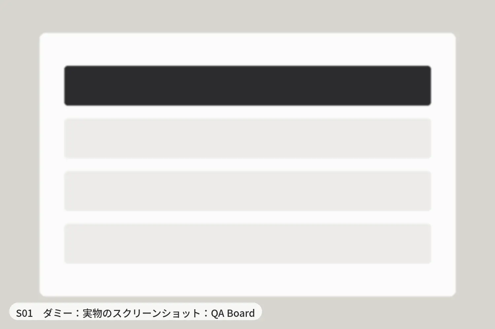
会場とオンラインからの質問を1か所に集め、選んだ質問だけを登壇者の画面に表示します。
［QR］ コード ［000］ 質問を送ると、上の画面に表示されます
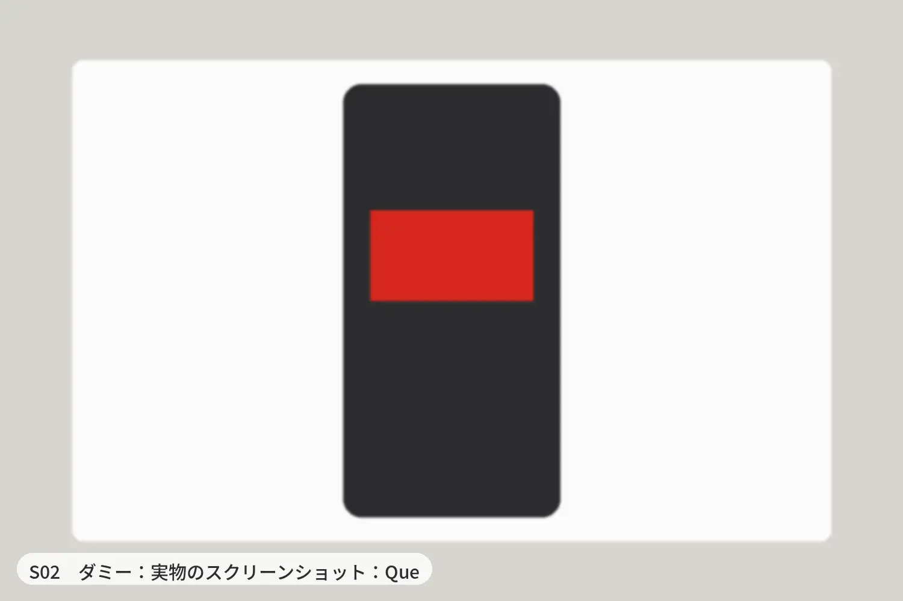
残り時間と合図を、登壇者とスタッフのスマホに表示します。進行の遅れを防ぎます。
［QR］ 読み取ると、デモの進行表が開きます
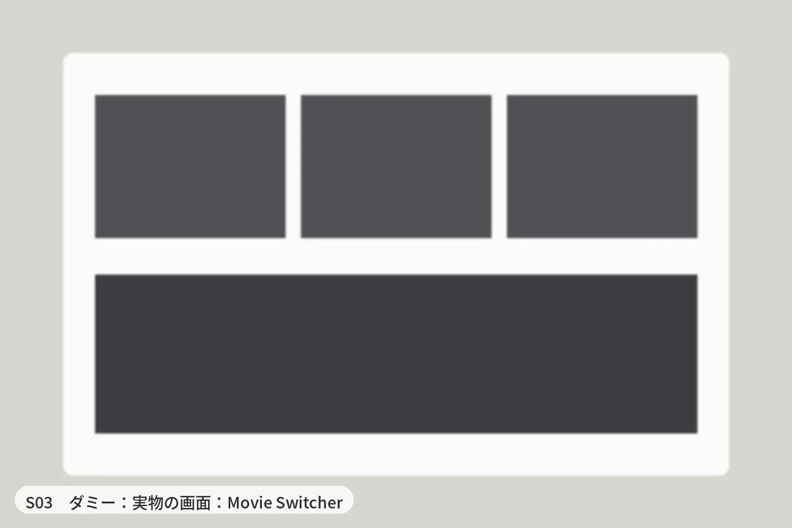
3台のカメラの映像から、話している人に合わせて切り替えた記録映像と字幕を作ります。
これらの道具は、当日私たちが用意して操作します。ご自身で使えるようになりたい方には、コーチングをご用意しています。 ［穴埋め09：デモ環境］
事例と金額
すべての事例を同じ項目で掲載しています。
ご自身の会に近いものを探してみてください。
Case #01 | ［主催機関名］
［当日起きたことと、どう戻したか。2〜3行］





Case #02 | ［主催機関名］
［当日起きたことと、どう戻したか。2〜3行］
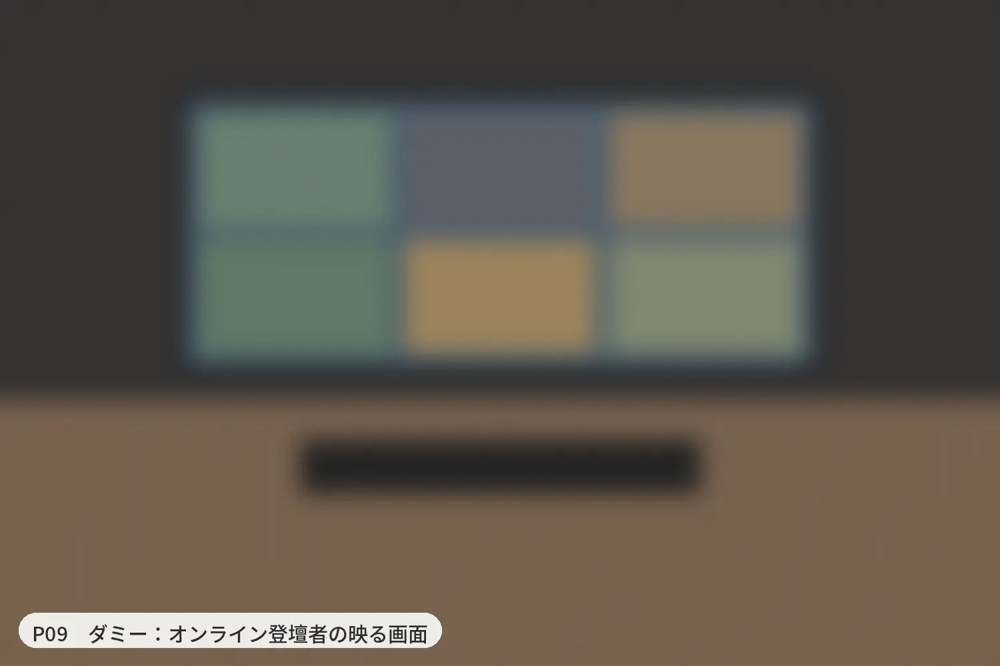
Case #03 | ［主催機関名］
［当日起きたことと、どう戻したか。2〜3行］
［頼む前に不安だったこと、当日どうだったか。2〜3行］
写真・映像の追加
記録写真も、記録映像も、同じ日にまとめてご依頼いただけます。
見積も請求も打ち合わせも1回で済みます。
01

報告書や広報に使える写真を、専任カメラマン1名が撮影します
02
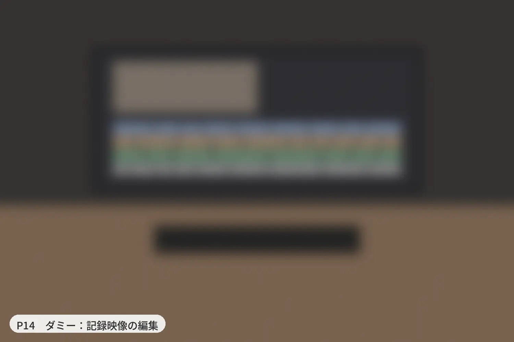
話している人に合わせて画面を切り替えた記録映像を、字幕つきで作成します
03
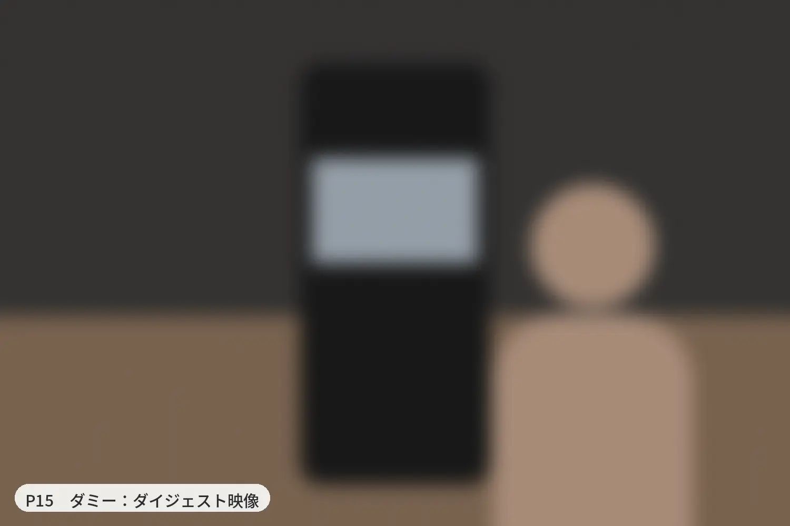
次回の告知や、成果報告に使える短いまとめ映像を作ります
04

報告書の下書きにそのまま使えるテキストデータを作成します
［40万円］（税別）
スタンダードに上の4つを加えて、スタッフ3名で伺います。
一回の現場で、報告書の素材まで揃います。
自分たちで配信する
小さい会はご自身で、大きい会だけ私たちにお任せください。
手順書とチェックリストが残るので、担当者が替わっても引き継げます。
まだ何も決まっていない方へ
15分のオンライン相談で、iPhoneで足りるかどうかから一緒にお話しします。決まっているのが日程だけでもかまいません。
大学・公共機関の発注
稟議や相見積に必要な書類を、
お問い合わせの前からご用意しています。
よくある質問
［最短の日数と、繁忙期の目安］
［対応している配信先］
対応できます。スタッフを1名追加します（［金額］）。
配信用の回線を持ち込みます（［金額］）。事前に会場で電波状況を確認します。
［返金・減額の規定］
新宿駅からおおむね90分以内で伺える会場が対応エリアです。エリア内は、会場の下見も交通費も25万円に含まれます。エリア外の会場は、交通費と宿泊費の実費で伺います。
対応できます。スタンダードとまるごとには、受付用のデジタルチケットが含まれます。申込の受付、当日の入場、終了後の来場者数の報告までを引き受けます。詳しくは受付とチケットをご覧ください。
販売と決済は行っていません。参加費がある会は、お使いのチケット販売サービスや請求書で集金いただき、申込者の名簿（CSV）をお預かりして、当日の入場だけを引き受けます。
名簿は受付と報告のためだけに使い、会の終了から30日で自動的に削除します。委託契約書や情報セキュリティのチェックシートが必要な場合は、ご相談ください。
8問のプラン診断でご確認いただけます。iPhoneで足りる会なら、そうお伝えします。
歓迎します。仕様書のひな形と見積書の見本もお送りしますので、他社への依頼にもそのままお使いください。
請求書払い（後払い）に対応しています。見積書・納品書・請求書の3点を発行します。